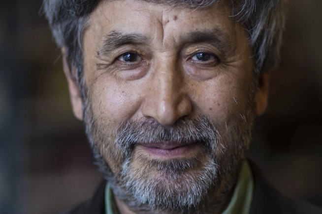

Project Exile: Uzbekistan Continues Ban on Exiled Journalist
Hamid Ismailov deserves an apology. Or at the very least, an explanation.
It has been 26 years since the events that led Uzbek journalist Ismailov to leave his home country of Uzbekistan. In the 1990s, Ismailov was working with a BBC television crew to make a film about Uzbekistan. The repressive regime in power under Islam Karimov opened a criminal case against Ismailov. The authorities said Ismailov was trying to overthrow the government.
Friends advised Ismailov to flee Uzbekistan after threats against his family and attacks on his home. So he did. A quarter-century later, he still hasn’t been back.
That’s not for lack of trying. Ismailov attempted to go back as recently as last year after the death of Karimov in 2016. He was denied entry.
One of the most widely published Uzbek writers in the world, Ismailov’s books are banned in his home country. Mentions of Ismailov are not tolerated. His existence has essentially been erased from the daily cultural life of his homeland. However, in the age of the internet, Ismailov has found ways to reach the Uzbek audience through social media. He posts his novels to Facebook where Uzbeks can read them.
According to Reporters Without Borders’s press freedom index, Uzbekistan is ranked 169th out of 180 countries. With traditional media tightly controlled, the government’s attention has more recently shifted to independent news websites and instant messaging apps.
After Karimov’s death in 2016, Prime Minister Shavkat Mirziyoyev assumed power. On March 2, Uzbekistan released the world’s longest-imprisoned journalist Yusuf Ruzimuradov, who had been imprisoned for over 19 years. Ismailov expressed joy at the news of Ruzimuradov’s release but remains doubtful saying,“as much as I am hopeful, I am skeptical as well”.
For the past 24 years, Ismailov has lived in the United Kingdom, where he has worked for the BBC in a variety of positions. In May 2010, Ismailov was appointed the BBC Writer-in-Residence, a position he held until the end of 2014. Ismailov is currently the editor for Central Asian Service at the BBC.
Ismailov spoke with Index on Censorship’s Sydney Kalich about the state of human rights in Uzbekistan, his time in exile and his newly translated book, The Devil’s Dance. Below is an edited version of their interview:
Index: What was the human rights situation like in Uzbekistan before you left and how has the situation changed over the last 23 years?
Ismailov:
Unfortunately it has worsened over the years because of the autocratic regime of president Karimov, who was in power at that time and died in 2016. So all this time the situation with human rights was quite dire in Uzbekistan. Uzbekistan was always in the lower, in the bottom part of the human rights records in the world.
So, nowadays with the new president, the way Shavkat Mirziyoyev acts makes us hopeful that the situation with human rights is improving because several political prisoners were freed from prison. Some activities and press have started to be more active and more open. There’s a glimmer of hope that things will improve. But at the same time — looking around at other countries with new leaders who pretended first to be reformers but then revert to the policies of previous rulers — I am also a bit skeptical. As much as I am hopeful, I am skeptical as well.
Index: You tried to go back to Uzbekistan last year and were turned away, do you think you’ll see your country again?
Ismailov:
Yes, it was quite unfortunate because even under the previous authorities I attempted twice to enter Uzbekistan after the Andijan events of 2005, but the new administration did not allow me to enter the country.
That was quite a shock. I think that they owe me an apology for why they didn’t allow me into my own country. I am one of the writers that is quite well known in the West and all over the world who promotes Uzbek literature – maybe most of all.
So why haven’t I been allowed into the country? I need an explanation and at least an apology before I decide what to do next.
For more reports on freedom of expression around the globe, visit this page
What We Do
Global Journalist covers international news with a focus on parts of the world rarely covered in mainstream media. We tell the international stories that matter and the stories of the people who cover them.